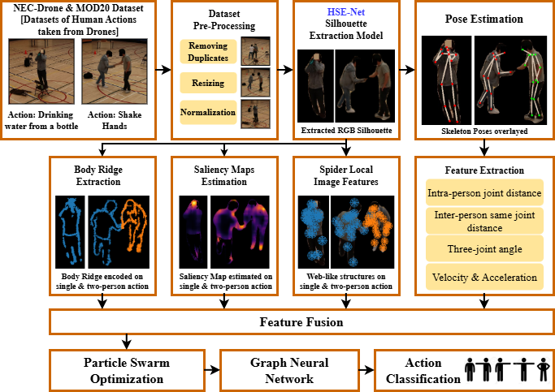

Unmanned aerial vehicles (UAVs) are increasingly employed for human activity recognition (HAR) in surveillance and emergency response, yet aerial perspectives introduce challenges such as small-scale human silhouettes, occlusions, motion blur, and unreliable pose estimation that limit the effectiveness of end-to-end deep learning models. In this work, we have presented HARR-Net, a fusion-driven framework that is aimed at capturing complementary cues to scale, orientation, and background variations by combining deep and handcrafted representations. Our pipeline integrates a lightweight Human Silhouette Extraction Network (HSE-Net) for clutter-free structural cues, Part Affinity Fields for pose, spectral residual saliency for attention refinement, Hessian-based ridge encoding for structural detail, and a handcrafted Spider Local Image Feature (SLIF) descriptor for fine-grained spatial patterns. These multi-modal features are optimized by Particle Swarm Optimization and classified by a Graph Neural Network, with accuracies of 83.6% on NEC-Drone and 88.3% on MOD20. These results outperform the state-of-the-art performance of end-to-end methods. These results show that fusion-based approaches are more resilient to the challenges introduced by an aerial viewpoint and therefore prove to be the most reliable solution for UAV-based HAR.

The proposed system HARR-Net represents a silhouette-driven multi-feature framework for drone-based human action recognition. It commences with the preprocessing steps, which involve duplicate removal, resizing, and normalization in order to provide uniform representation for the data. It then proceeds to introduce a new HSE-Net to generate accurate silhouette masks from RGB frames by strongly suppressing background noise. From these silhouettes, the multitask learning of multi-person pose estimation with 15 anatomical keypoints captures the kinematic features, and complementary descriptors such as saliency maps, body ridge encoding, and SLIF accentuate unique visual, structural, and topological patterns. These multimodal representations are then fused to provide a robust grounding for human action classification, as illustrated in Fig.
| Dataset | Methods | Classification Accuracy (%) |
|---|---|---|
| NEC-Drone | Kothandaraman et al. | 71.46 |
| Kothandaraman et al. | 80.75 | |
| Xian et al. | 78.6 | |
| Xian et al. | 81.7 | |
| Sacilotti et al. | 74.8 | |
| Proposed Method | 83.6 | |
| MOD20 | Khan et al. | 74.0 |
| Vrskova et al. | 78.21 | |
| Dhiman et al. | 86.13 | |
| Proposed Method | 88.3 |
| Dataset | Precision (Avg ± Std) | Recall (Avg ± Std) | F1-Score (Avg ± Std) |
|---|---|---|---|
| NEC-DRONE | 0.73 ± 0.22 | 0.74 ± 0.20 | 0.74 ± 0.21 |
| MOD20 | 0.69 ± 0.24 | 0.71 ± 0.23 | 0.71 ± 0.24 |
As shown in Table 2, our approach achieves an average F1 score of 0.74 ± 0.21 on NEC Drone, which is indicative of its robustness to category level variation. Compared with previous approaches in Table 1, our framework reaches an accuracy of 83.6%, outperforming that of previous approaches such as Kothandaraman et al. (71.46%, 80.75%), Xian et al. (78.6%, 81.7%) and Sacilotti et al. (74.8%). The MOD20 dataset evaluation results show that the framework achieves an average F1 score of 0.71 ± 0.24 and an overall accuracy of 88.3%. The framework achieves better performance results than the previous methods Khan et al. and Vrskova et al. and Dhiman et al. The system demonstrates strong performance in both controlled and uncontrolled aerial HAR environments.
This study utilized the NEC-Drone dataset, which includes 5,250 video clips captured in a school gym, where 19 actors performed 16 predefined actions. We also used the MOD20 dataset, containing 2,324 video clips across 20 action classes.
Shahid, Harris, Shaheryar Najam, and Ahmad Jalal. "HARR-NET: A Novel Silhouette-Aware Fusion Method Using HSE-Net for Reliable UAV Human Activity Recognition." In 2025 Horizons of Information Technology and Engineering (HITE), pp. 1-6. IEEE, 2025.
For questions about this work, please contact:
harrisshahid.m@gmail.com